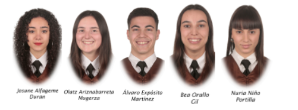

Loramendi Kalea, 4, 20500 Arrasate, Guipúzcoa
Nosotros
Nuestro Equipo
Nuestro equipo está formado por profesionales apasionados y comprometidos con la innovación tecnológica y la salud pública. Contamos con expertos en desarrollo de software, medicina y gestión de proyectos que trabajan en conjunto para crear soluciones digitales innovadoras que marcan la diferencia en comunidades con recursos limitados, ayudando a combatir la malaria de manera efectiva.
Nuestra Historia
Nuestra empresa nació con la misión de mejorar la detección temprana de la malaria, una enfermedad que afecta a millones de personas en regiones vulnerables. Desde nuestros inicios, hemos combinado tecnología avanzada con conocimientos médicos para desarrollar herramientas accesibles y confiables que facilitan el diagnóstico en zonas donde los recursos son escasos. Gracias a la colaboración con instituciones internacionales, seguimos ampliando nuestro impacto para salvar vidas y promover la salud pública global.
Nuestra Filosofía
Misión
Desarrollar y comercializar una herramienta digital innovadora que facilite el diagnóstico temprano de malaria, dirigida a países de bajos recursos, cumpliendo con la normativa de comercialización de la UE.
Visión
Ser un referente global en el uso de la tecnología digital para la lucha contra la malaria, mejorando la salud pública y contribuyendo al desarrollo sostenible en regiones de bajos recursos.
Valores
Innovación, Normativa, Necesidades sociales, Oportunidad, Visión sostenible y Accesibilidad.